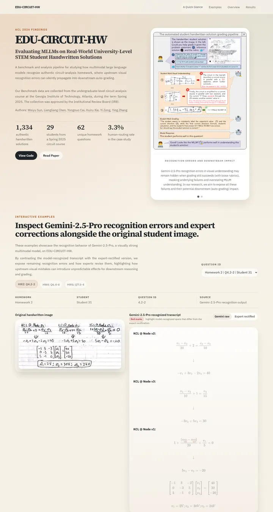

EDU-CIRCUIT-HW: Evaluating Multimodal Large Language Models on Real-World University-Level STEM Student Handwritten Solutions
温かな勉強机。うっすらと方眼が入ったクリーム色のグラデーションの床に、重厚なセリフ体のタイトルとスマートフォン風のスライドカード、そして学生の手書きとモデルの書き起こしを並べるインタラクティブなビューア。

表示されたページと照合済みです。
選んだ理由
温かいクリーム色のグラデーションと力強いセリフ体のタイトルです。ヒーローでは、統計値の行と、枠付きのスマートフォン風カルーセルを並べています。タブ、メタデータの帯、画像と書き起こしの横並び表示を備えたインタラクティブな例のセクションが、研究をとてもよく見せています。
以下の説明と DESIGN.md 本文は英語です。コーディングエージェントが同じ一つの版を読めるよう、翻訳していません。
概要
カラーパレット
タイポグラフィ
Source Serif 4 600/700
EDU-CIRCUIT-HW: Evaluating Multimodal Large Language Models on Real-Wo
Abstract · Method · Results · BibTeX — 0123456789
IBM Plex Sans 400/600/700
EDU-CIRCUIT-HW: Evaluating Multimodal Large Language Models on Real-Wo
Abstract · Method · Results · BibTeX — 0123456789
余白と形
ページの構成要素
ガイドライン
似たスタイル

CRAFT: Training-Free Cascaded Retrieval for Tabular QA
淡い青焼きブルーの整った製品マニュアル。どの段階もそれぞれの色の縁をまとっている。

Efficient Self-Evaluation for Diffusion Language Models via Sequence Regeneration
青、すみれ、アプリコットの夜明け色に染まった角丸カードの整った積み重ね。署名はグラデーションのワードマーク。

FIGMA: Towards FIne-Grained Music retrievAl
温かみのある紙に刷った音楽誌。赤いキッカーの下に重厚な Newsreader の見出し、結果を示す大きな赤いセリフ数字、柔らかなクリーム色の枠に収まった図。

GuideDog: A Real-World Egocentric Multimodal Dataset for Blind and Low-Vision Accessibility-Aware Guidance
静かな学術書の一頁。セリフ体の一段組み、リンクには牛血色のインク、自分の行だけをほんのり染める表。

LaMI: Augmenting Large Language Models via Late Multi-Image Fusion
丁寧に作られた学会配布資料。Noto Serif の見出し、ネイビーの枠線ボタン、交互に現れる柔らかなグレーの帯。

PairCoder++: Pair Programming as a Universal Paradigm for Verified Code-Driven Multimodal and Structured-Artifact Generation
すっきりとした白い製品ページ。青いお知らせの帯、墨のように黒いピル型ボタン、柔らかな影のカードに載ったすべての図。